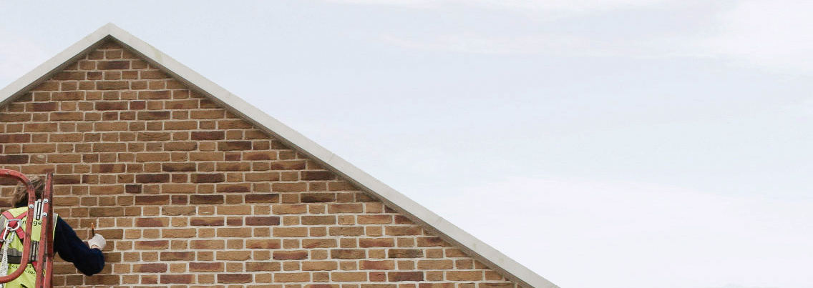

<div class="home-banner wrapper wrapper__main">

  

  <div class="home-banner__text">

    <h1 class="home-banner__title">Tinting corrects colours in brickwork, <br> stone and concrete</h1>

    <p class="home-banner__paragraph">By creating bespoke tints and applying them with a keen eye, we are able to disguise ugly repairs, unite extensions with the original building or perhaps create a whole new appearance throughout. This process provides a very natural, permanent colour change. </p>

  </div>

</div>
